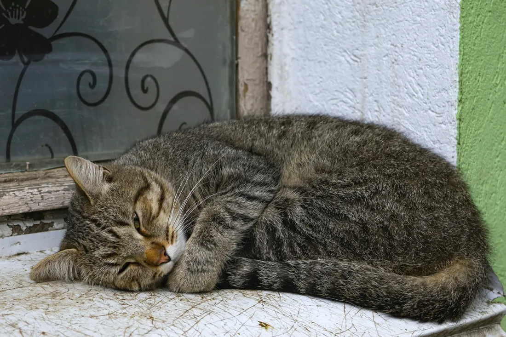

Infektionen und Infusionen
Hat Ihr Tier Fieber, ist es matt oder trinkt es zu wenig, braucht es Medikamente und oft Flüssigkeit. Antibiotika gebe ich, wenn Bakterien die Ursache sind, und Infusionen lege ich bei Ihnen zu Hause, auf dem Sofa oder im Körbchen.
Woran Sie es merken: Fieber · Mattigkeit · Trinkt wenig

Wann Sie sofort anrufen
Diese Zeichen deuten auf eine Infektion, die nicht warten sollte.
- Ihr Tier hat seit mehr als einem Tag nicht gefressen.
- Es ist matt, hat warme Ohren und zittert.
- Es trinkt kaum noch, oder die Haut bleibt stehen, wenn Sie sie am Nacken leicht hochziehen.
- Es hustet, niest stark oder hat eitrigen Ausfluss aus Nase oder Augen.
Was ich bei Ihnen mache
Ich messe die Temperatur, höre Herz und Lunge ab und untersuche Ihr Tier gründlich. So finde ich heraus, wo die Infektion sitzt.
Wenn nötig nehme ich Blut ab und schicke es ins Labor. Das Ergebnis bespreche ich mit Ihnen am Telefon.
Ein Antibiotikum bekommt Ihr Tier nur, wenn Bakterien dahinterstecken. Gegen Viren hilft es nicht.
Fehlt Ihrem Tier Flüssigkeit, bekommt es eine Infusion unter die Haut oder in die Vene. Das dauert je nach Menge eine halbe bis eine Stunde, und Sie bleiben dabei.
Braucht Ihr Tier über mehrere Tage durchgehend Infusionen, ist eine Klinik mit Überwachung besser. Dann organisiere ich die Überweisung.
Bis ich bei Ihnen bin
- Lassen Sie frisches Wasser stehen und bieten Sie Ihrem Tier Wasser auch direkt an.
- Messen Sie die Temperatur, wenn Ihr Tier das zulässt. Bei Hund und Katze liegt sie normal zwischen 38 und 39 Grad.
- Geben Sie keine Antibiotika aus einer alten Packung.
Was auf Sie zukommt
Ich rechne nach der Gebührenordnung für Tierärzte ab, dazu kommt die Hausbesuchsgebühr. Bevor ich behandle, sage ich Ihnen, womit Sie rechnen müssen.
Alles zur AbrechnungHäufige Fragen
Warum soll ich das Antibiotikum bis zum Ende geben?
Hört die Behandlung zu früh auf, überleben die widerstandsfähigsten Bakterien, und die Infektion kommt zurück. Geben Sie es so lange, wie ich es Ihnen sage, auch wenn Ihr Tier schon munter wirkt.
Tut eine Infusion weh?
Der Stich ist kurz unangenehm, danach spürt Ihr Tier wenig. Die meisten Tiere liegen dabei ruhig auf ihrem Platz.
[FEHLT: fachliche Freigabe der Texte durch Herrn Al Saeed]
Ich komme zu Ihnen nach Hause.
Rufen Sie an oder fragen Sie einen Termin an. Mein Team meldet sich so schnell wie möglich und macht mit Ihnen eine Uhrzeit aus.